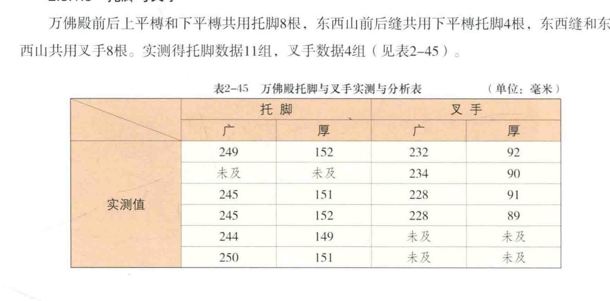
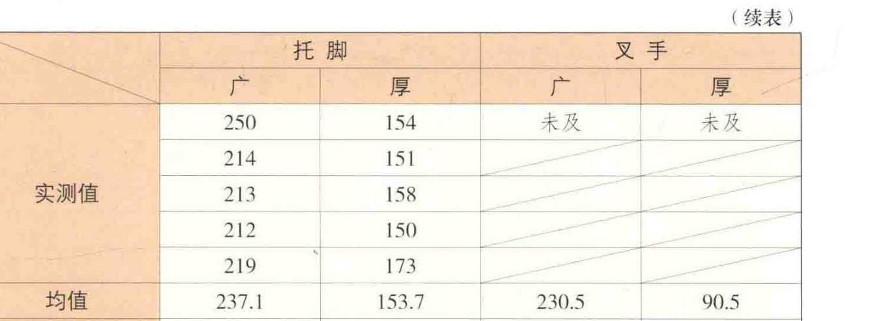
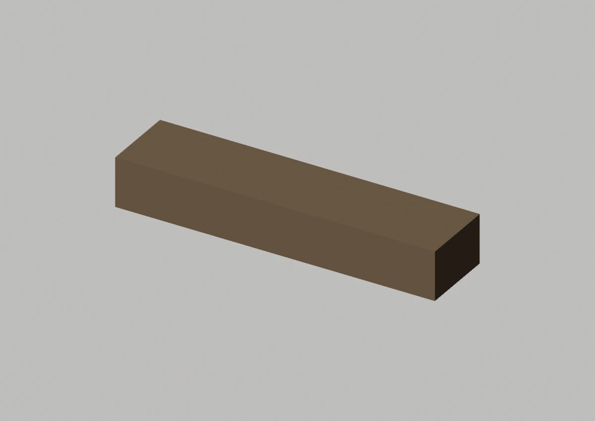
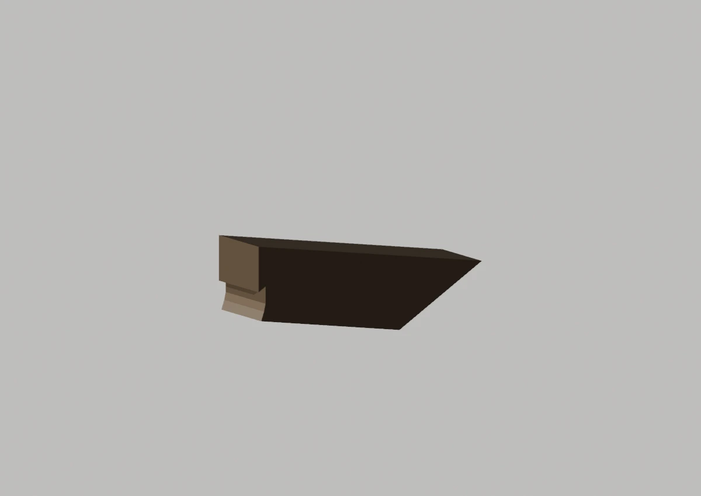
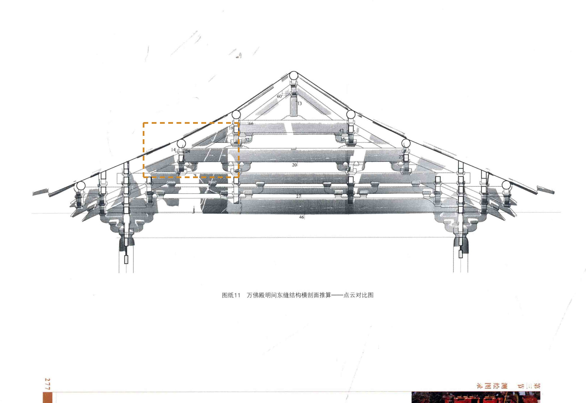

Master为平直参考体，装配局部另列
先看形，再看差异

切口深度、完整端面仍无法比较
定性对照：两侧未做比例归一或像素叠加。绿色实线只描原图可辨边缘；橙色虚框只表示原图查找范围。
02 / 形态细节
其他角度、截面与现有局部版本





现有局部工作模型 · 与 Master 分开看

03 / 原图与位置
目标在原始资料的哪里


安装位置与复用
东缝/南上平槫；东缝/南下平槫；东缝/北上平槫；东缝/北下平槫；西缝/南上平槫；西缝/南下平槫；西缝/北上平槫；西缝/北下平槫；东山南缝下平槫下；东山北缝下平槫下；西山南缝下平槫下；西山北缝下平槫下
变体：沿用现行登记口径
Master：CMP-FRAME-TUOJIAO-001_MASTER
对应实例范围（12条登记记录，不是物理件数）
- 托脚-东缝-南上平槫 · 东缝/南上平槫
- 托脚-东缝-南下平槫 · 东缝/南下平槫
- 托脚-东缝-北上平槫 · 东缝/北上平槫
- 托脚-东缝-北下平槫 · 东缝/北下平槫
- 托脚-西缝-南上平槫 · 西缝/南上平槫
- 托脚-西缝-南下平槫 · 西缝/南下平槫
- 托脚-西缝-北上平槫 · 西缝/北上平槫
- 托脚-西缝-北下平槫 · 西缝/北下平槫
- 托脚-东山-南缝-下平槫 · 东山南缝下平槫下
- 托脚-东山-北缝-下平槫 · 东山北缝下平槫下
- 托脚-西山-南缝-下平槫 · 西山南缝下平槫下
- 托脚-西山-北缝-下平槫 · 西山北缝下平槫下
04 / 证据与边界
出处、模型身份与未知部分
仍然未知：原登记尺寸冲突保留在底部来源说明，本轮不据可视化调整任何尺寸。
原工程记录（按原文保留）：Master 为矩形包络，缺完整斜撑端部与实际承托切口。报告公布均值237.1×153.7与可见行复算234.1×154.1存在已登记冲突；本轮不改尺寸。
模型原始渲染、网格身份与批准范围
现有 BLEND · axon 云端只读渲染；原始二进制与网格/变换未改。

现有 BLEND · front 云端只读渲染；原始二进制与网格/变换未改。

现有 BLEND · side 云端只读渲染；原始二进制与网格/变换未改。

east:TUOJIAO_FRONT main工作V003：含局部批准和待审对象；此图不升级批准。

west:TUOJIAO_FRONT main工作V003：含局部批准和待审对象；此图不升级批准。

A1、A2、A3共享测绘数据脉络，不作为三次独立复测。官方展示只作形态参考；推断、遮挡与未知不升级为实测事实。